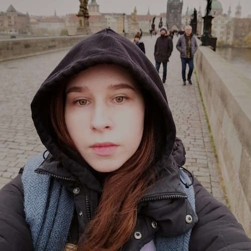
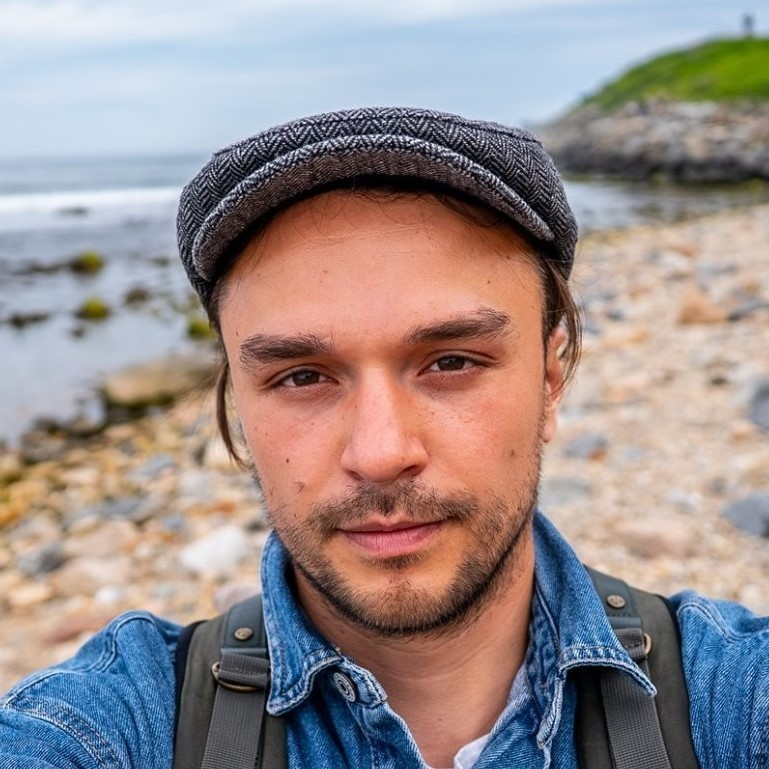
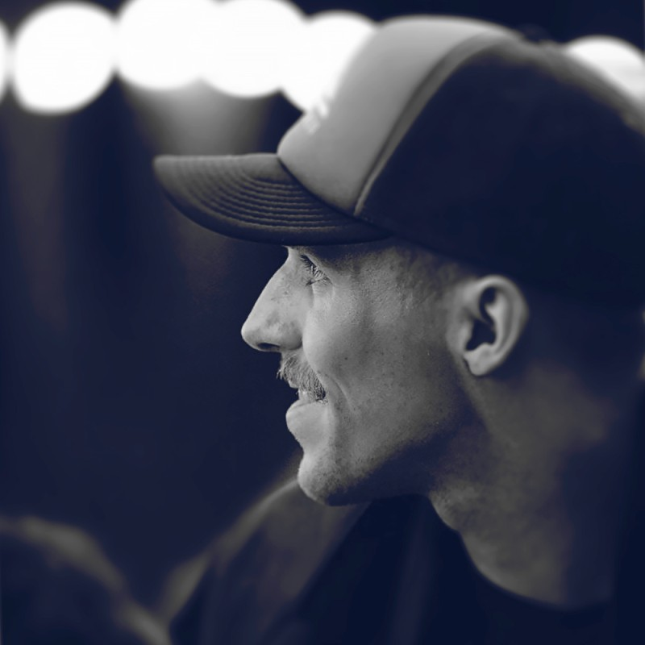
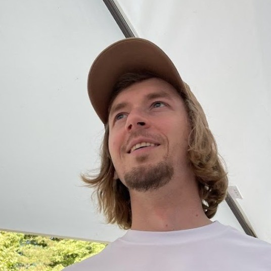
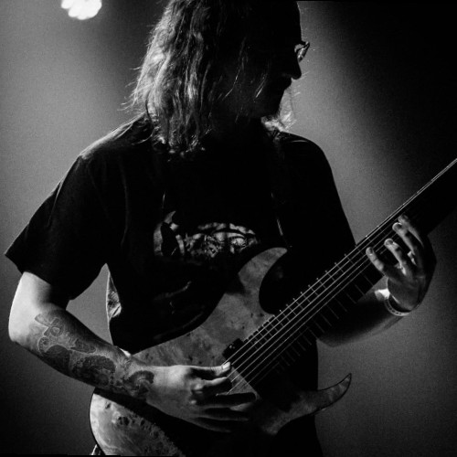
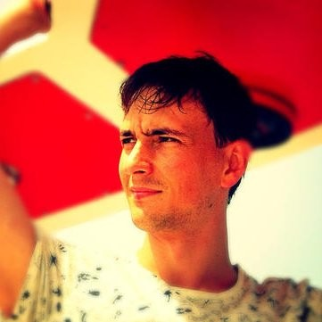

One crew.
A world ahead.
BOG’s first playable demo brings together the craft of an experienced team. Meet the team taking that first step towards a much larger game.
Engineering for what comes next.
Artem Chaika and Olga Taranova built BOG’s engineering foundation in C++ and Unreal Engine. Artem’s previous projects include Mortal Kombat, Injustice 2, Asphalt 8 and Outriders; Olga’s include Ubisoft’s XDefiant. They bring experience from those larger productions to the gameplay, rendering and online systems of BOG.

Artem created a key piece of BOG’s visual technology: a depth-aware rendering approach that enables the team to bring console-style visual richness to a mobile screen. Real 3D objects can enter a scene represented by a texture and move behind its details. For Anton and the artists, this is part of what makes their ambitious visual world possible on a phone.
Artem also teaches Unreal Engine, including advanced multiplayer programming. More than 4,000 learners have enrolled in his courses on Udemy. He brought Olga into BOG, extending the engineering team through a professional connection.
Olga shares her experience beyond production as a Women in Games Ambassador, a speaker at Pocket Gamer Connects Barcelona and a judge for the 2026 DevGAMM Awards. In BOG, she implemented the gameplay mechanics and logic, integrated PlayFab, and set up servers and analytics. Online PvP is technically supported, although it is not enabled in the demo.
Artem’s BOG rendering technology · see it in action Artem’s projects and Unreal courses · Udemy Olga at Pocket Gamer Connects BarcelonaA world with its own character.
Vitali Yaronski leads BOG’s art direction and brings together the people who can realise it. His background crosses filmmaking and creative production for games, including leading playable-ad work at Homa, a mobile publisher whose portfolio has passed a billion downloads. His short-film work also took him to Cannes. He understands both the image on screen and the people needed to make it happen, bringing artists such as Pavel Marchankau into BOG.


Pavel Marchankau brings a range that is already recognised beyond this team. The game-art publication 80 Level has featured his character work and published a detailed breakdown of his process. For BOG, he designed the UI, created an original character from its 2D concept through to its 3D sculpt, and made the Thrylox logo. His case study shows that visual language carried through chunky switches, keycap-like controls and character art.
Anton Petukh, also known as Lumo, leads the three-person art team that made BOG’s world visible. With Andrew Stoyanov and a third artist, he brought together every location and cinematic in the demo, the ship that serves as its hub, and the stock character models used alongside Pavel’s original character. The three worked as a tightly coordinated unit, taking on a huge amount of the game’s visual production and bringing it to the screen quickly and beautifully.

Anton’s earlier work includes a cinematic shot for a World of Tanks Blitz New Year event. Andrew’s eye for detail is visible in his own prop work: for a digital recreation of a 1966 Fisher-Price toy, he photographed and dismantled the original to reproduce it closely. In BOG, those skills meet in a complete world, with the engineering in place so the artists can concentrate on creating.
For Maksym, an avid player of Diablo and other Blizzard games, cinematics set a particularly high bar. Seeing Anton’s sequences, he recognised the atmosphere and level of craft he had wanted for BOG. That is the standard the team wants to carry into production.
Vitali’s creative network also reaches into film VFX. He has introduced the team to Mark Pinheiro, whose film work includes the Oscar-winning Tenet. They have discussed possible work on BOG’s future VFX production, with his involvement still under discussion. It is the kind of specialist experience Thrylox can look to as the project grows.
Pavel’s character work · featured by 80 Level Pavel’s BOG UI and art case study Anton’s World of Tanks Blitz cinematic work Andrew’s prop study · ArtStation Mark Pinheiro · VFX experience This demo image is unavailable.
This demo image is unavailable. This demo image is unavailable.
This demo image is unavailable.The care you can hear.
The same care is audible in BOG. Deniel Pavlovskiy writes its music and creates its sound. He releases music as Kidius Shredius Maximus and has composed for The Convergence, a mod for Elden Ring, including the Godskin Matriarch theme. His album Ascension credits him with the instruments, recording, programming, mixing and mastering. Konstantin introduced him to BOG: they have known each other for years, including hikes where Deniel played guitar.

For the demo, the team offered him the option of using stock sounds if time was short. Deniel recorded the sound effects, breaths and voices himself, and wrote the music specifically for BOG. Even at this early stage, the sound has been made for this world.
That understanding was there in the first theme he shared in Discord. Maksym heard it and immediately recognised the music he had imagined while creating BOG. Deniel later made him a longer version to listen to on his phone. The first proposal is below: a chance to hear how quickly two people’s sense of the same world can meet.
Taking BOG to its players.
For BOG’s test campaigns, the team created advertising accounts, set up and launched campaigns, monitored their performance and analysed the results.
A shared direction.
Maksym Palko created BOG’s setting, story and gameplay loops, and worked through the design in detail: feature specifications, game rules, balance and the player experience. His background as a Senior Product Analyst brings a habit of examining how people use a product alongside the imagination needed to create a world.

For the engineers and artists, that meant having someone to turn to with concrete questions. Who is the player? What kind of ship do they have? How do damage types interact? What should happen at each step of a feature? Maksym had worked through the answers and stayed involved wherever the team needed him. He trusted the others with the same confidence he placed in himself, giving them a clear foundation and the freedom to shape how it came to life.
Built to stay compact.
Thrylox builds BOG with senior specialists who work across disciplines, supported by AI-assisted workflows and tools made for the project. New tools are tested on real production tasks; the ones that improve the work become part of the pipeline.
Artem’s mobile scene technology gives the artists a way to realise BOG’s visual direction on a phone. Olga’s AssetCsvSync connects Unreal assets with CSV files in both directions, making game data easier to work with. Both address concrete needs in the game’s production.
As Thrylox grows, it plans to add the skills each stage needs and organise around small product teams. New games will have their own teams; released games will retain teams for continued development and live operations. The company can grow while each team stays focused on its game.
Olga’s AssetCsvSync · an Unreal production toolThe expedition is still beginning.
BOG’s next stage is a larger world: more places to explore, more content to play, and a fuller experience shaped through testing. The demo is the first stretch of that expedition, built by people whose skills already fit together.
A detailed vision became working systems, places to inhabit and music that felt right from the first listen. Each person brought their own standards to the work, with the trust and freedom to follow them through. That is what this team is taking into the next stage.
The Discord channel is still their shared room. Someone is working quietly, someone is sharing music, and the next piece of BOG is taking shape.
In this expedition
- Konstantin PalkoCompany operations & finance
- Artem ChaikaEngineering & rendering technology
- Olga TaranovaGameplay logic & online systems
- Vitali YaronskiArt direction
- Pavel MarchankauUI, character art & studio identity
- Andrew StoyanovEnvironment art
- Anton Petukh / LumoVisual production lead & cinematics
- Classified crew memberEnvironment art
- Deniel PavlovskiyOriginal music & sound design
- Classified crew memberUser Acquisition Manager
- Maksym PalkoWorld, game design & product